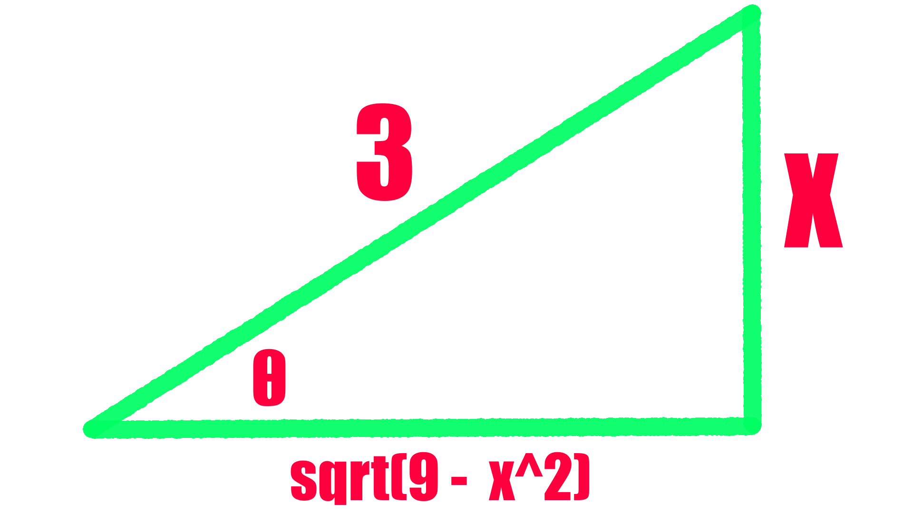

\boxed{ \text{Integration by Parts: } \int u dv = uv - \int v du }
Deriving the Integration by Parts Formula:
\text{Product Rule: } \frac{d}{dx} [ f(x)g(x) ] = f(x)g'(x) + f'(x)g(x)
Now, let u = f(x) and v = g(x).
Therefore: \frac{d}{dx} (uv) = uv' + u'v \\~\\ \text{(Integrate both sides)} \\~\\ \begin{aligned} \int \frac{d}{dx} (uv) dx &= \int ( uv' + u'v ) dx \\ uv &= \int ( uv' + u'v ) dx \\ uv &= \int u dv + \int v du \\ uv - \int v du &= \int u dv \\ \int u dv &= uv - \int v du \end{aligned}\text{Solve: } \int x \sin x dx
Let u = x and dv = \sin x dx.
dv = \sin x dx \\ \int dv = \int \sin x dx \\ v = -\cos x
u = x \\ u' = x' \\ du = 1
\begin{aligned} \int u dv &= uv - \int v du \\ \int x \sin x dx &= x ( - \cos x ) - \int - \cos x dx \end{aligned}
\int x \sin x dx = - x \cos x + \sin x + c
Tip: You can verify the answer seeing if (- x \cos x + \sin x)' = x \sin x
Important: \int v du might end up being the term you started with. In that case, you can move it across the = to break the loop.
- This strategy isn’t unique to integration by parts!
\text{Solve: } \int (\cos x)^3 dx
Notes:
- U-sub doesn’t simplify this because there isn’t a \sin x to cancel out the \frac{du}{dx}
- Integration by parts make the problem more difficult in every step.
- Because of this, we must resort to trigonometric substitution.
Recall the following identity: \begin{aligned} \boxed{ \text{Pythagorean Identity: } \cos^2 x + \sin^2 x = 1 } \end{aligned}
It logically follows that: \begin{aligned} \cos^2 x &= 1 - \sin^2 x \\ \sin^2 x &= 1 - \cos^2 x \end{aligned}
\begin{aligned} \int (\cos x)^3 dx &= \int 1 - (\sin x)^2 \cos x dx \\~\\ u &= \sin x \to du = \cos x dx \to dx = \frac{du}{\cos x} \\~\\ &= \int (1 - u^2) du \\ &= \int du - \int u^2 du \\ &= u - \frac{u^3}{3} \\~\\ &\text{Therefore, } \\~\\ \int (\cos x)^3 dx &= \sin x - \frac{(\sin x)^3}{3} \\ \end{aligned}Note: For this problem, we only need to use the \cos^2 x identity, but I’m listing both for demonstration.
\large\text{I. Strategy for Powers of $\sin$ and $\cos$}
\boxed{ \text{Given: } \int cos^j x \sin^k x dx }
Case 1: k is odd
Rewrite \sin^k x = \sin^{k-1}x \sin x
Case 2: k is even
Rewrite \cos^j x = \cos^{j-1}x \cos x
Case 3: k and j are even
Use half-angle identities.
\begin{aligned} \int \sin^2 x dx &= \int ( \frac{1}{2} - \frac{1}{2} \cos 2x ) dx \\ &= \frac{1}{2} - \frac{1}{2} \cos 2x dx \\ &= \frac{1}{2} x - \frac{1}{4} \sin 2x + C \end{aligned}
Note: Half-angle identities are also-known-as power-reduction formulas.
- If you don’t know them, you might end up stuck!
\large\text{II. Strategy for Powers of $\tan$ and $\sec$}
\boxed{ \text{Given: } \int \tan^k x \sec^j x dx }
Case 1: j is even and j \ge 2
Rewrite \sec^2 x = \sec^{j-2} x \sec^2 x.
tl;dr: Pull off \sec^2 x and convert to \tan using Pythagorean identity.
- Leave behind a \sec^2 x to be cancelled out by u-substitution when we let u = \tan x
Case 2: k is odd and j \ge 1
Rewrite \tan^k x \sec^j x = \tan^{k-1} x \sec^{j - 1} x \sec x \tan x
tl;dr: Pull off \tan^2 x and convert to \sec using Pythagorean identity.
- Leave behind a \sec x \tan x to be cancelled out by u-substitution when we let u = \sec x
Case 3: k is odd, k \ge 3, and j = 0
Rewrite \tan^k x = \tan^{k-2} x \tan^2 x = \tan^{k-2} \sec^2 x - \tan^{k-2} x
tl;dr: Pull off \tan^2 x and split into two separate integrals, the first to be solved with Case 1 and the latter to be solved with Case 3.
Case 4: k is even and j is odd
Use \tan^2 x = \sec^2 x - 1 to express \tan^k x in terms of \sec x
Memorize This
\begin{aligned} \text{Half-Angle Identities : }& \begin{aligned} \sin^2 x &= \frac{1}{2} (1 - \cos 2x) \\ \cos^2 x &= \frac{1}{2} (1 + \cos 2x) \end{aligned} \\~\\ \text{Double-Angle Identities : }& \begin{aligned} \sin 2x &= 2 \sin x \cos x \\ \cos 2x &= \cos^2 x - \sin^2 x \end{aligned} \\~\\ \text{$\sec$ \& $\tan$ Integrals: }& \begin{aligned} \int sec^2 x dx &= \tan x + C \\ \int \sec x \tan x dx &= \sec x + C \\ \int \tan x dx &= \ln ( \sec x ) + C \\ \int \sec x dx &= \ln ( \sec x + \tan x ) + C \end{aligned} \\~\\ \text{Pythagorean Identities: }& \begin{align} \cos^2 x + \sin^2 x &= 1 \\ 1 + \tan^ 2 x &= \sec^2 x \\ \cot^2 x + 1 &= \csc^2 x \end{align} \end{aligned} \\~\\ \small\textit{(2) is (1) $\div$ cos$^2$ x} \qquad \textit{(3) is (1) $\div$ sin$^2$ x}
| Form | x | dx | Pythagorean Identity |
|---|---|---|---|
| a^2-x^2 | a\sin\theta | a \cos \theta | \cos and \sin |
| x^2+a^2 | a\tan\theta | a \sec^2 \theta | \tan and \sec |
| x^2-a^2 | a\sec\theta | a \sec \theta \tan \theta | \sec and \tan |
How-To:
Substituting x for Trig
\begin{aligned} \text{Case A: } a^2 -x^2 &\to \begin{aligned} x &= a \sin \theta \\ dx &= a \cos \theta d \theta \end{aligned} \\~\\ \text{Case B: } a^2 + x^2 &\to \begin{aligned} x &= a \tan \theta \\ dx &= a \sec^2 \theta d \theta \end{aligned} \\~\\ \text{Case C: } x^2 - a^2 &\to \begin{aligned} x &= a \sec \theta \\ dx &= a \sec \theta \tan \theta d \theta \end{aligned} \\~\\ \end{aligned}
Note: Some problems require you to complete the square.
\text{Solve: } \int \sqrt{9-x^2} dx
Solving:
\text{Identity: } a^2 \cos^2 \theta = a^2 - a^2 \sin^2 \theta \\
\text{Let } x = 3 \sin \theta \\ \text{Then } dx = 3 \cos \theta d \theta
Now we can substitute our x and dx: \int \sqrt{9 - x^2} dx = \int \sqrt{ 9 - (3 \sin \theta )^2 } 3 \cos \theta d \theta \\ = \int \sqrt{9 - 9 \sin^2 \theta} 3 \cos \theta d \theta \\~\\ \text{Apply Pythagorean identity: } \\~\\ = \int \sqrt{9 \cos^2 \theta} 3 \cos \theta d \theta \\ = \int 3 \cos \theta \times 3 \cos \theta d \theta \\ = 9 \int \cos^2 \theta d \theta \\~\\ \text{Half-angle identity: } \\~\\ = 9 \int \frac{1 + \cos (2 \theta) }{2} d \theta \\ = 9 ( \frac{1}{2} \theta + \frac{\sin (2 \theta) }{4} \theta ) + C\\ = \frac{9}{2} \theta + \frac{9}{4} \sin (2 \theta) +C \\~\\ \text{Map $\theta$ to $x$ with inverse trig: } \\~\\ x = 3 \sin\theta \to \frac{x}{3} = \sin \theta \to \text{Inverse sine} \to \arcsin \frac{x}{3} = \theta \\~\\ \text{We need to manipulate $\sin 2 \theta$ to use the mapping: } \\~\\ \boxed{ \text{Double-Angle Identitities: } \begin{aligned} \sin 2 \theta &= 2 \sin \theta \cos \theta \\ \cos 2 \theta &= \cos^2 \theta - \sin^2 \theta \end{aligned} } \\~\\ \text{Applying the double-angle identity: } \\~\\ \frac{9}{2} \theta + \frac{9}{4} \sin (2 \theta) +C = \frac{9}{2} \theta + \frac{9}{4} ( 2 \sin \theta \cos \theta ) \\~\\ \text{Now we need just to find $\cos \theta$: } \\~\\ \text{Since $\sin \theta = \frac{x}{3}$}:

\cos \theta = \frac{ \text{Adjacent} }{ \text{Hypotenus} } = \frac{\sqrt{9-x^2}}{3} \\~\\ \frac{9}{2} \theta + \frac{9}{4} ( 2 \sin \theta \cos \theta ) = \frac{9}{2} \arcsin ( \frac{x}{3} ) + \frac{9}{2} ( \frac{x}{3} ) ( \frac{\sqrt{9-x^2}}{3} ) \\~\\ = \frac{9}{2} \arcsin ( \frac{x}{3} ) + \frac{x \sqrt{9 - x^2}}{2} + CTip: The square root you get from solving the missing side of the triangle should match the square root in the original problem.
- If it doesn’t match, you did something wrong.
\boxed{ \begin{aligned} \text{Partial Fraction Decomposition: } \\~\\ \frac{1}{ \textcolor{red}{ x^2 } \textcolor{green}{ (x-1) } \textcolor{blue}{ (x+1)^3} } = \textcolor{red}{ \frac{A}{x} + \frac{B}{x^2} } + \textcolor{green}{ \frac{C}{x-1} } + \textcolor{blue}{ \frac{D}{x+1} + \frac{E}{(x+1)^2} + \frac{F}{(x+1)^3 } } \end{aligned} }
How-To:
Linear Factors
\text{Case I: Denominator factors into $n$ distinct linear factors: } \\~\\ \frac{A_1}{a_1 x + b_1} + \frac{A_2}{a_2 x + b_2} + ... + \frac{A_n}{a_n x + b_n}
\text{Case II: Denominator contains a repeated linear factor $(ax + b)^n$} \\~\\ \frac{A_1}{a x + b} + \frac{A_2}{(a x + b)^2} + ... + \frac{A_n}{(a x + b)^n}
Irreducible Quadratic Factors
\text{Case I: $\forall$ irreducible quadratics ($ax^1 + bx + c$) in the denominator} \\~\\ \frac{Ax + B}{ax^2 + bx + c}
\text{Case II: $\forall$ repeated irreducible quadratic $(ax^2 + bx + c)^n$ in the denominator} \\~\\ \frac{A_1 x + B_1}{a x^2 + bx + c} + \frac{A_2 x + B_2}{(a x^2 + bx + c)^2} + \frac{A_n x + B_n}{(a x^n + bx + c)^n}
\text{Solve: } \int \frac{3x+2}{x^3 - x^2 - 2x} dx
= \int \frac{3x+2}{ x ( x^2 - x^1 - 2 )} dx = \int \frac{3x+2}{ x ( x-2) ( x+1 )} dx
= \int \frac{3x+2}{ x ( x-2) ( x+1 )} dx = \int \frac{A}{x} + \frac{B}{x-2} + \frac{C}{x+1} dx
\int 3x+2 dx = \int A(x-2)(x+1) + B(x)(x+1) + C(x)(x-2) dx
$$
= \int \frac{A}{x} + \frac{B}{x-2} + \frac{C}{x+1} dx = \int \frac{-1}{x} + \frac{\frac{4}{3}}{x-2} - \frac{\frac{1}{3}}{x+1} dx
\text{Solve: } \frac{x^2 + 3x + 5}{x + 1} dx
We can simplify this by using long division.
x^2 + 3x + 5 \div x + 1 = x + 2 \text{r} 3 \\~\\ \text{Therefore: } \frac{x^2 + 3x + 5}{x + 1} dx = \int x + 2 + \frac{3}{x+1} dx
Thus, the answer is: \int x + 2 + \frac{3}{x+1} dx = \frac{x^2}{2} + 2x + 3 \ln |x + 1| + C
Tip: Remember, when performing long division the result is simply the quotient + remainder / divisor.
\text{Solve: } \int \frac{x-2}{(2x-1)^2 (x-1)} dx
You need to split this in a special way to handle the exponent: \int \frac{x-2}{(2x-1)^2 (x-1)} dx = \int \frac{A}{2x-1} + \frac{B}{(2x-1)^2} + \frac{C}{x-1} dx
Now we multiply both sides by the denominator to get the following: \int x-2 dx = \int A(2x-1)(x-1) + B(x-1) + C(2x-1)^2 dx
Strategic substitution to find the coefficients: $$ \begin{aligned} x = 1: & \begin{aligned} 1-2 &= 0 + 0 + C(2-1)^2 \\ -1 &= C \end{aligned} \\~\\ x = \frac{1}{2}: & \begin{aligned} \frac{1}{2} - 2 &= 0 + B(\frac{1}{2} - 1) + 0 \\ - \frac{3}{4} &= -\frac{1}{2} B \\ B &= 3 \end{aligned} \\~\\ x = 0: & \begin{aligned} -2 &= A(-1)(-1) + 3(-1) - 1 (-1)^2 \\ -2 &= A - 3 - 1 \\ A &= 2 \end{aligned} \\~\\ \end{aligned}$$
Plug back in coefficients: \int \frac{2}{2x-1} + \frac{3}{(2x-1)^2} - \frac{1}{x-1} dx
Solve the first two terms with u-sub (u = 2x - 1): \begin{aligned} &= \int \frac{2}{u} \times \frac{1}{2} du + \int \frac{3}{u^2} \times \frac{1}{2} du - \ln | x - 1 | + C \\ &= \ln | u | + \frac{3}{2} \times \frac{u^{-3}}{-3} - \ln | x - 1 | + C \\ &= \ln | 2x - 1 | - \frac{3}{2(2x-1)} - \ln | x - 1 | + C \end{aligned}Memorize This
\text{Integrals for Partial Fractions: } \begin{aligned} \int \frac{1}{x} dx &= \ln | x | + C \\~\\ \int \frac{1}{x+a} dx &= \ln | x + a | + C \\~\\ \int \frac{1}{x^2+a^2} dx &= \frac{1}{a} \arctan( \frac{x}{a}) + C \\~\\ \int \frac{1}{x^2+1} dx &= \arctan x + C \end{aligned}
\text{Irreducible Quadratics: } \begin{aligned} x^3 - a^3 &= (x - a) (x^2 + ax + a^2) \\ x^3 + a^3 &= (x + a) (x^2 - ax + a^2) \end{aligned}
Convergence and Divergence:
- If the limit exists, we say that the integral converges.
- If the limit does not exist, we say it diverges.
- Remember: Infinity does not exist!
L’Hopital’s Rule
Remember to use L’Hopital’s to solve limits of indeterminate form. \boxed{ \text{L'Hopital's Rule: } \lim_{x \to c} \frac{f(x)}{g(x)} = \lim_{x \to c} \frac{f'(x)}{g'(x)} } \\ \small\textit{Provided that $\lim$ of $f(x)$ and $g(x)$ from $x \to c$ are both $\infin$ or both $0$}
{ \large\text{Case A: } } \\ \text{Let $f$ be continuous over $[a,\infin)$, then:} \\ \boxed{ \int_a^\infin f(x) = \lim_{t \to \infin} \int_a^t f(x) dx }
{ \large\text{Case B: } } \\ \text{Let $f$ be continuous over $(-\infin,b]$, then:} \\ \boxed{ \int_{-\infin}^b f(x) = \lim_{t \to -\infin} \int_t^b f(x) dx }
{ \large\text{Case C: } } \\ \text{Let $f$ be continuous over $(-\infin,\infin)$, then:} \\ \boxed{ \int_{-\infin}^\infin f(x) dx = \int_{-\infin}^0 f(x) dx + \int_0^\infin f(x) dx } \\~\\ \small\textit{Provided that the limit exists (A) (B), or both integrals converge (C)}
{ \large\text{Case A: } } \\ \text{Let $f$ be continuous over $[a,b)$, then:} \\ \boxed{ \int_a^b f(x) dx = \lim_{t \to b^+} \int_a^t f(x) dx } \\
{ \large\text{Case B: } } \\ \text{Let $f$ be continuous over $(a,b]$, then:} \\ \boxed{ \int_a^b f(x) dx = \lim_{t \to a^+} \int_t^b f(x) dx } \\
{ \large\text{Case C: } } \\ \text{Let $f$ be continuous over $[a,b]$ except at $c$ where $a < c < b$, then:} \\ \boxed{ \int_a^b f(x) dx = \lim_{t \to c^-} \int_a^t f(x) dx + \lim_{t \to c^+} \int_t^b f(x) dx } \\~\\ \small\textit{Provided that the limit exists (A) (B), or both integrals converge (C)}
\boxed{ \text{Comparison Test: } \begin{aligned} \text{If $\int_a^\infin f(x) dx = \infin$} &\text{, then $\int_a^\infin g(x) dx = \infin$} \\ \text{If $\int_a^\infin g(x) dx = L$} &\text{, then $\int_a^\infin f(x) dx \le L$} \end{aligned} } \\ \small\textit{Provided that $f$ and $g$ are continuous over $[a,\infin)$,} \\ \textit{with $0 \le f(x) \le g(x), \forall x \ge q$} \\~\\
\boxed{ \text{Arc Length: } \int_a^b \sqrt{1 + f'(x)^2} dx } \\ \small\textit{Provided that $f'$ exists and is continuous over $[a,b]$} \\
\boxed{ \text{Surface Area of Solid of Revolution: } \int_a^b 2 \pi f(x) \sqrt{1 + f'(x)^2} dx } \\ \small\textit{Provided that $f'$ exists and is continuous over $[a,b]$} \\
\boxed{ \text{Center of Mass: } x = \frac{M}{m} } \\~\\ M = \sum_{i-1}^n m_i x_i \qquad m = \sum_{i-1}^n m_i
\text{Because } x = \frac{m_1 x_1 + m_2 x_2}{m_1 + m_2}
\boxed{ \text{Center of Mass (2D Plane): } x = \frac{ My }{ m } \qquad y = \frac{M_x}{m} } \\~\\ M_y = \sum_{i=1}^n m_i x_i \qquad M_x = \sum_{i=1}^n m_i Y_i \qquad m = \sum_{i-1}^n m_i
If objects are on a 2D plane, we get the center of mass by calculating the center mass in the x and y-directions separately.
\begin{aligned} m_1 &= 2 \text{kg}, (-1,3) \\ m_2 &= 6 \text{kg}, (1,1) \\ m_3 &= 4 \text{kg}, (2,-2) \\ \end{aligned} \\~\\ \begin{aligned} x &= \frac{ 2(-1) + 6(1) + 4(2) }{ 2 + 6 + 4 } \\ &= \frac{-2 + 6 + 8}{12} \\ &= 1 \end{aligned} \\~\\ \begin{aligned} y &= \frac{ 2(3) + 6(1) + 2(-2) }{ 2+6+4 } \\ &= \frac{6+6-8}{12} \\ &= \frac{1}{3} \end{aligned}
\boxed{ \text{Center of Mass (Lamina): } x = \frac{My}{m} \qquad y = \frac{M_x}{m} } \\~\\ M_y = \int_a^b x f(x) dx \qquad M_x = \int_a^b \frac{[f(x_i^*)]^2}{2} dx \\ m = \int_a^b f(x) dx
Now, what if mass is evenly spread continuously throughout a 2D sheet of metal, called a lamina?
Consider the lamina whose shape is a region bounded by y=f(x) above, x-axis below, and lines x=a and x=b.
Example: Deriving center of mass formula for a rectangle
- The center of mass is right the middle.
- Symmetry Principle: If region R is symmetric about a straight line, its geometric center lies on l.
First, let’s get the center of mass (x_i^* is the center of the rectangle) \text{Center of Mass of Rectangle: $(x_i^*, \frac{f(x_i^*}{2})$} \\~\\ \text{x-value: } x_i^* = \frac{x_i + x_i + 1}{2} \qquad \text{y-value: } \frac{f(x_i^*}{2}
Now, let’s find the density (\rho).
- (Recall that mass is density \times area.) \text{Mass of Rectangle: } m = \int_a^b \rho f(x) dx
Now we need moment with respect to the x-axis and y-axis. \text{Moments for One Rectangle: } \\~\\ \text{I. W.r.t. y-axis: } \rho f(x_i^*) \Delta x \times x_i^* \\~\\ \text{II. W.r.t. x-axis: } \rho \frac{[f(x_i^*)]^2}{2} \Delta x
So, M_y = \sum \rho f(x_i^*) \Delta x \times x_i^* \\ \\~\\ M_x = \sum \rho \frac{[f(x_i^*)]^2}{2} \Delta x
Which can be rewritten as: M_y = \int_a^b \rho x f(x) dx \\~\\ M_x = \int_a^b \rho \frac{[f(x_i^*)]^2}{2} dx
Q: Find center of mass of a lamina bounded by f(x)=\sqrt{x}, x-axis, over [0,4]
A:
Let’s start by finding the total mass (m) \begin{aligned} m &= \int_0^4 \rho \sqrt{x} dx \\ &= \rho \int_0^4 \sqrt{x} dx \\ &= \rho \frac{2}{3} ( 4^{3/2} - 0 ) \\ &= \frac{2 \rho}{3} (2)^3 \\ m &= \frac{16 \rho}{3} \end{aligned}
Next let’s find the moment with respect to the y-axis
\begin{aligned} M_y &= \int_0^4 \rho x \sqrt{x} dx \\ &= \rho \int_0^4 x^{3/2} dx \\ &= \rho \times \frac{2}{5} \times (\sqrt{x})^5 \\ M_y &= \frac{64 \rho}{5} \end{aligned}
\begin{aligned} M_x &= \int_0^4 \rho \frac{ \sqrt{x}^2 }{ 2 } dx \\ &= \frac{\rho}{2} \int_0^4 x^2 dx \\ &= \frac{\rho}{4} (4^0 - 0^2) \\ M_x &= 4 \rho \end{aligned}
\begin{aligned} x &= \frac{\frac{64 \rho}{5}}{\frac{16 \rho}{3}} \\ &= \frac{12}{5} \end{aligned} \\~\\ \begin{aligned} y &= \frac{4 \rho}{\frac{16 \rho}{3}} \\ &= \frac{3}{4} \end{aligned}